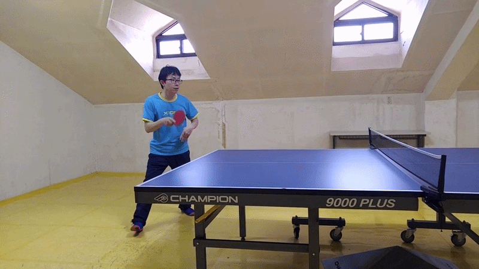
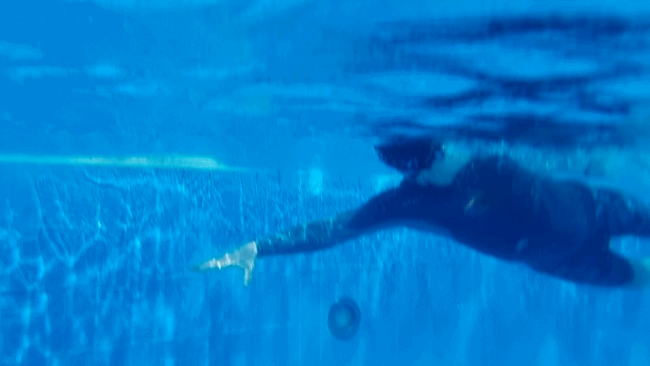

"일상의 쉼표 안에서 길어 올리는 맑은 영혼의 숨결을 만끽합니다."
Breathing in the clarity of clean soul captured within the pauses of daily life.
Chapter 01
독서 Reading
은은하게 번지는 종이의 향과 서서히 넘어가는 책장 소리 속에서 맑고 투명한 영혼의 숨을 고릅니다.
검은 활자들 사이에 머무는 고요한 침묵의 시간은 소란스러운 세상을 뒤로하고 내면을 영적 지혜로 풍성히 가득 채웁니다. 한 문장 한 문장을 깊이 사색하며 세밀한 창조주의 섭리를 마음에 새겨넣는 아름다운 축복의 여정입니다.

Chapter 02
탁구 Table Tennis
초록빛 테이블 위를 빠른 속도로 가로지르는 은빛 탁구공의 포물선 속에 건강한 에너지와 생기가 깃듭니다.
탁구 라켓과 공이 경쾌하게 부딪히는 찰나의 리듬 속에 오롯이 몰입하며 육체의 신성한 강건함을 일깨웁니다. 매 랠리마다 가벼운 웃음과 정겨운 땀방울이 오가는 동안, 이웃들과 언어를 초월한 신뢰와 기쁨 어린 친교를 가만히 꽃피우는 소통의 마당입니다.
Chapter 03
수영 Swimming
세상의 복잡한 소음이 일순간에 멈춘 푸른 물결의 품 안에서 온전히 몸을 싣고 평온을 유영합니다.
부드러운 물길을 어루만지며 숨결의 규칙적인 속도에 집중하는 일은 내면의 오래된 상념과 피로를 조용히 씻어내는 정화의 의식입니다. 순리의 부력을 받들며 물과 나의 경계가 허물어지는 평화 속에서 창조주께서 내려주시는 완전한 평화와 세심한 돌봄을 경험합니다.
